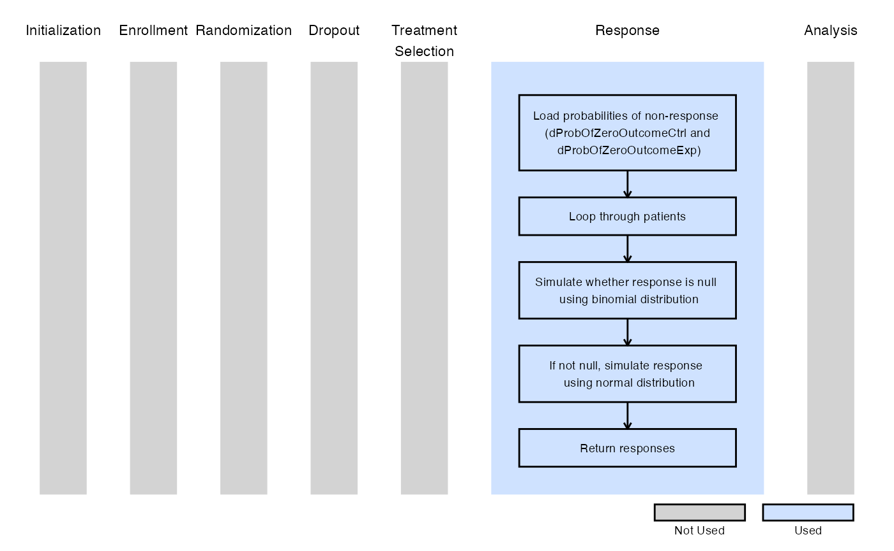
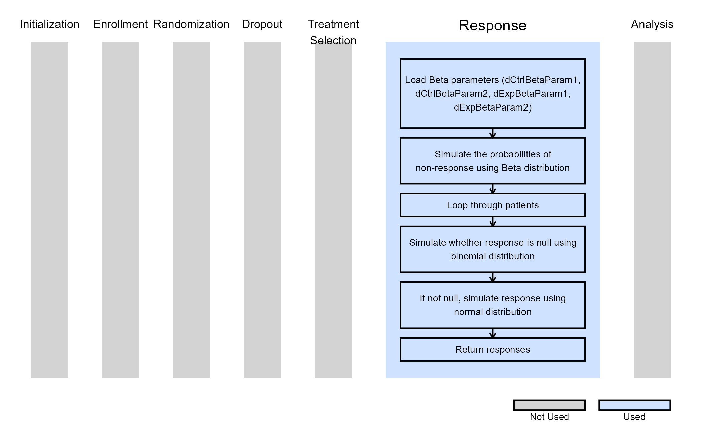

2-Arm, Normal Outcome - Patient Simulation
J. Kyle Wathen
April 16, 2025
2ArmNormalOutcomePatientSimulationDescription.RmdThese examples are related to the Integration Point: Response - Continuous Outcome. Click here for more information about this integration point.
Introduction
The following examples illustrate how to integrate new patient outcome simulation (response) capabilities into East Horizon or East using R functions in the context of a two-arm trial. In each example, the trial design includes a standard-of-care control arm and an experimental treatment arm, with patient outcomes assumed to follow a normal distribution.
Once CyneRgy is installed, you can load this example in RStudio with the following commands:
CyneRgy::RunExample( "2ArmNormalOutcomePatientSimulation" )Running the command above will load the RStudio project in RStudio.
East Workbook: 2ArmNormalOutcomePatientSimulation.cywx
RStudio Project File: 2ArmNormalOutcomePatientSimulation.Rproj
In the R directory of this example you will find the following R files:
SimulatePatientOutcomePercentAtZero.R - This file provides an example R function to simulate patient data from a mixture distribution where a proportion of patients have a null response. The code in Example 1 can be used when the proportion of patients with null response is a fixed value.
SimulatePatientOutcomePercentAtZeroBetaDist.R - This file provides an example R function to simulate patient data from a mixture distribution where a proportion of patients have a null response. This approach assumes that the probability of null response is unknown and must first be drawn from a Beta distribution.
TestingAndExploration.R - This file provides an example of loading East output and calling the R functions in in Example 1 from within R. The intent of this file is to help users call and test the function in Example 1.
In addition, if you would like to experiment with these examples without looking at the complete solution, you can find fill-in-the-blank-type code files in the FillInTheBlankR directory.
Example 1 - Simulation of Patient Normal Data from a Mixture Distribution
This example is related to this R file: SimulatePatientOutcomePercentAtZero.R
In this example, the patient outcome is measured as a change from baseline. However, a certain proportion of patients will not respond to treatment, resulting in no change from baseline (i.e., non-responders). Based on historical data, this proportion is estimated to be between 20% and 40%.
The R function SimulatePatientOutcomePercentAtZero, provided in the R file, allows users to explore the impact of varying proportions of non-responders on the expected study power.
Refer to the table below for the definitions of the user-defined parameters used in this example.
| User parameter | Definition |
|---|---|
| dProbOfZeroOutcomeCtrl | Value between 0 and 1 representing the probability a patient is a non-responder in the control arm. |
| dProbOfZeroOutcomeExp | Value between 0 and 1 representing the probability a patient is a non-responder in the experimental arm. |
The figure below illustrates where this example fits within the R integration points of Cytel products, accompanied by a flowchart outlining the general steps performed by the R code.

Example 1.1 - All Patients Respond
Assume that all patients will respond to treatment. A binomial distribution is used to determine whether a patient is a responder or a non-responder. If the patient is a responder, their outcome is simulated from a normal distribution using the mean and standard deviation specified in East Horizon or East and sent to R. In this example, the probability of a patient being a non-responder is set to zero. Refer to the table below for the values of the user-defined parameters used in this example.
| User parameter | Value |
|---|---|
| dProbOfZeroOutcomeCtrl | 0.0 |
| dProbOfZeroOutcomeExp | 0.0 |
This demonstrates that using the R function with a non-responder probability of zero produces the same results as simulating the data directly with the default engine of East Horizon or East.
Example 1.2 - 20% of Non-Responders
Now, assume that, on average, 20% of patients will not respond to treatment. A binomial distribution is used to determine whether a patient is a non-responder. If the patient is a responder, their outcome is simulated from a normal distribution using the mean and standard deviation specified in East or East Horizon and sent to R. Refer to the table below for the values of the user-defined parameters used in this example.
| User parameter | Value |
|---|---|
| dProbOfZeroOutcomeCtrl | 0.2 |
| dProbOfZeroOutcomeExp | 0.2 |
Example 1.3 - 40% of Non-Responders
This example is similar to the previous one, but here we assume that, on average, 40% of patients will not respond to treatment. Refer to the table below for the values of the user-defined parameters used in this example.
| User parameter | Value |
|---|---|
| dProbOfZeroOutcomeCtrl | 0.4 |
| dProbOfZeroOutcomeExp | 0.4 |
Example 2 - Simulation of Patient Normal Data from a Mixture Distribution with Mixture Percent Sampled from a Beta Distribution
This example is related to this R file: SimulatePatientOutcomePercentAtZeroBetaDist.R
Now, the probability of a patient being a non-responder is treated as a random variable following a Beta distribution. This approach accounts for the uncertainty in the true probability of non-response. Additionally, the R function SimulatePatientOutcomePercentAtZeroBetaDist, provided in the script, allows for different Beta distributions to be assigned to each treatment. This feature can help assess how a treatment that reduces the likelihood of non-response would impact trial outcomes.
Refer to the table below for the definitions of the user-defined parameters used in this example.
| User parameter | Definition |
|---|---|
| dCtrlBetaParam1 | Alpha parameter for the Beta Distribution used to get the probability a patient is a non-responder in the control arm. |
| dCtrlBetaParam2 | Beta parameter for the Beta Distribution used to get the probability a patient is a non-responder in the control arm. |
| dExpBetaParam1 | Alpha parameter for the Beta Distribution used to get the probability a patient is a non-responder in the experimental arm. |
| dExpBetaParam2 | Beta parameter for the Beta Distribution used to get the probability a patient is a non-responder in the experimental arm. |
The figure below illustrates where this example fits within the R integration points of Cytel products, accompanied by a flowchart outlining the general steps performed by the R code.

Example 2.1 - 20%-40% (95% CI) of Non-Responders
For this example, independent distributions are used, which have a 95% credible interval of (0.2, 0.4). The function first simulates the probability of non-response for both the control and experimental arms using these Beta distributions. It then uses the simulated probabilities to determine the proportion of patients with a null response. Refer to the table below for the values of the user-defined parameters used in this example.
| User parameter | Value |
|---|---|
| dCtrlBetaParam1 | 23.1 |
| dCtrlBetaParam2 | 55.2 |
| dExpBetaParam1 | 23.1 |
| dExpBetaParam2 | 55.2 |
In this example, it is assumed that the two probabilities are sampled from the same distribution but are not identical within a given simulation. The R code can be easily adapted to modify this assumption if needed.
Example 2.2 - 20%-40% (95% CI) of Control Non-Responders, 10%-30% (95% CI) of Experimental Non-Responders
In this example, the treatment reduces the probability of non-response by 10% on average compared to the control. Specifically, assume that the probability of non-response in the control group follows a distribution, with a 95% credible interval of (0.2, 0.4). For the experimental treatment, assume the probability of non-response follows a distribution, with a 95% credible interval of (0.1, 0.3). Refer to the table below for the values of the user-defined parameters used in this example.
| User parameter | Value |
|---|---|
| dCtrlBetaParam1 | 23.1 |
| dCtrlBetaParam2 | 55.2 |
| dExpBetaParam1 | 10.8 |
| dExpBetaParam2 | 46.3 |